Nodes¶
Introduction¶
Nodes displayed in the flow editor can represent data operations or other types of operations for the type of flow the application displays. Nodes are joined together in a flow by data links (edges). Association links can also join two nodes together (in a non-directional relationship) and nodes can be connected to comments with a comment link.
Nodes can be customized into a large number of different layouts depending on the needs of the application, as shown below:
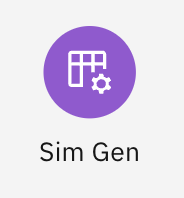


 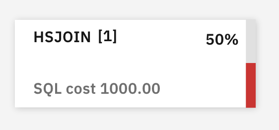
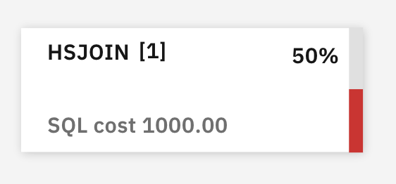
Pipeline Flow Node¶
Node objects are stored in the nodes array in a pipeline which itself is in the pipelines array of the pipeline flow. The node object in the pipeline holds some basic information used for node display such as:
- id - unique identifier
- position - x/y position relative to the canvas origin
- label
- description – displayed in the node tooltip (if enabled)
- image – image location on the server or a JSX object
- ports info (inputs and outputs)
- optional decoration information
Additional information on the node layout is configured in the node layout fields.
Node Elements¶
Nodes are made up of a number of display elements:
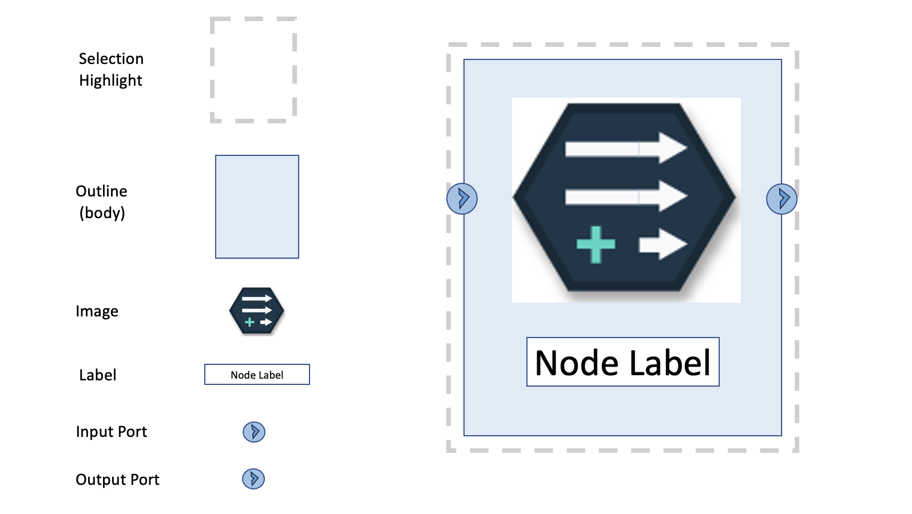
In addition, the node might have an ellipsis icon if context menus are enabled and one or more decorations. All of the node elements are optional, except the selection highlighting element.
Node Format¶
The enableNodeFormatType field of the canvas config object can be used to change the basic format of the node between “Horizontal” and “Vertical” format:

Each format type has its own set of node layout fields which can be overriden by the application for further customization.
Node image¶
The node image is specified in the image field of the node object in the pipeline flow and the palette. It can either be a URL to an image file on the server or a JSX object.
Here’s an example of a node using an image field with a URL that specifies an SVG object imported from a file on the server:
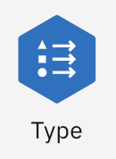
Here’s an example of a node using a JSX object which is an icon imported from the Carbon icons library.
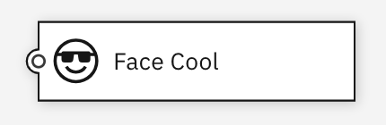
Node positioning¶
Nodes are positioned at the x/y coordinate from the canvas origin of the node’s top-left corner. The x/y coordinates are stored in the node object from the pipeline flow.
Ports¶
A node can have zero or more input ports and zero or more output ports.
- Input ports are the objects to which connections are made from other nodes that indicate a flow of data or control into the node.
- Output ports are the objects from which connections are made to other nodes that indicate a flow of data or control out of the node.
In many applications, nodes have just a single input and/or output port. There is no strict definition of why a node might have multiple input ports or multiple output ports. Often they are used to indicate a different kind of data flowing into or out of the node. For example, a relational-database Join node might have two input ports one for the left table data and one for the right table data in the join. Or a filter node might take data and split it into two parts based on some criteria and write out the different data to separate output nodes, like this:
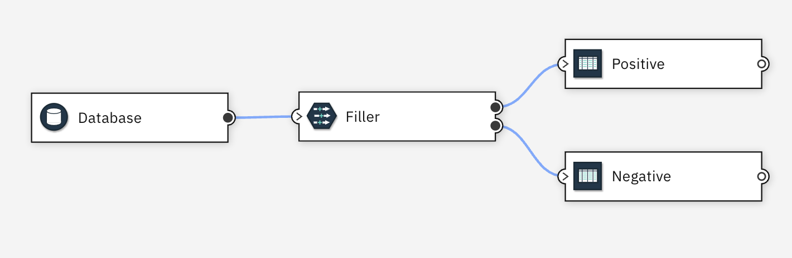
There can be multiple connections made into an input port or out of an output port. Each port has a maximum and minimum cardinality values which indicate the limits on the number of connections for the port. Common Canvas ensures the maximum cardinality is not exceeded for port connections.
Ports can be shown visually on, or close to, the node as circles or images. This positioning is controlled by the node layout fields.
Node Selection¶
See the Object Selection section in the flow editor page for details.
Guides for creating links¶
A guide is an image or shape drawn at the location of an output port. The user can drag the ‘guide’ to another node to create a new link connection to that node. The appearance of the guide can be customized by altering the node layout fields and CSS for the node. If output ports are visible, it appears as if the user is dragging the port but the guide is, in fact, a different node element.
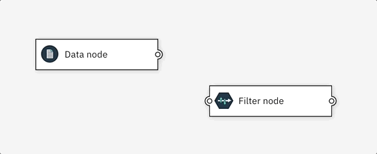 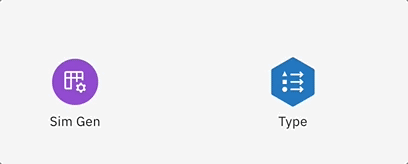
Resizable nodes¶
Nodes can be resized if the enableResizeableNodes canvas config field is set to true. The node can be resized if the user drags the border area in the desired direction.
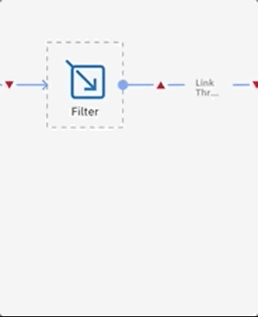
Insert node to link¶
Nodes can be inserted into a link and the flow re-wired appropritely, if enableInsertNodeDroppedOnLink canvas config field is set to true.
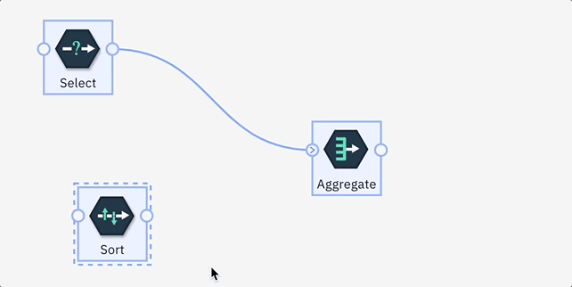
Highlight target node for link¶
A Node can be highlighted when a guide icon is being dragged towards it and a connection is allowed, if enableHighlightNodeOnNewLinkDrag canvas config field is set to true.
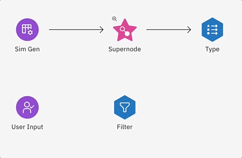
Other behaviors¶
There are other node behaviors which can be switched on or off. See the nodes section on the canvas config object.
React Nodes¶
The body of nodes can be drawn using a React object in place of the SVG elements usually displayed by Common Canvas. The React object is specified by the application in the nodeExternalObj field in the node layout fields.
Here is an example of two nodes using the CardNode React object from the Carbon Charts (React) library.
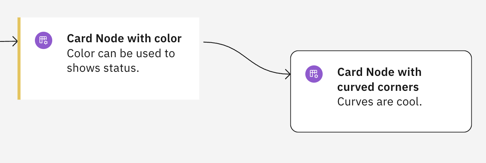
Branch highlighting¶
Branch highlighting allows the user to highlight upstream nodes, downstream nodes or the entire branch of nodes (both upstream and downstream) by choosing one of the Highlight options from the context menu for a particular node.
Clicking this:
Results in this:
Common Canvas add a class called d3-branch-highlight to the group <g> object of the node or the link in the branch. The application can use that class to specify its own CSS styling for the branch highlighting.
By default, Common Canvas provides colors and styles for the highlighted branch nodes and links, but the application can override them if desired using CSS like this.
d3-node-group.d3-branch-highlight {
.d3-node-body-outline {
stroke: red;
}
}
Supernodes¶
A supernode is a special kind of node that can reference another pipeline in the same pipeline flow object (internal) or, in some cases, in another pipeline flow (external). The referenced pipeline is known as a sub-flow or sub-pipeline.
These types of supernodes/sub-flows combinations have different uses:
- Internal sub-flows are useful for organizing flows by separating out closely related sets of nodes from the main flow.
- External sub-flows are useful for function reuse. That is, if a set of nodes performs some function that is needed by more than one pipeline flow, they would be placed into their own pipeline flow and referenced by the others.
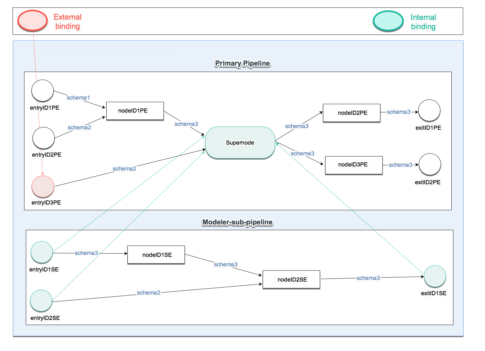
Common Canvas allows the user to create a supernode by selecting a set of nodes to be placed in the sub-flow:
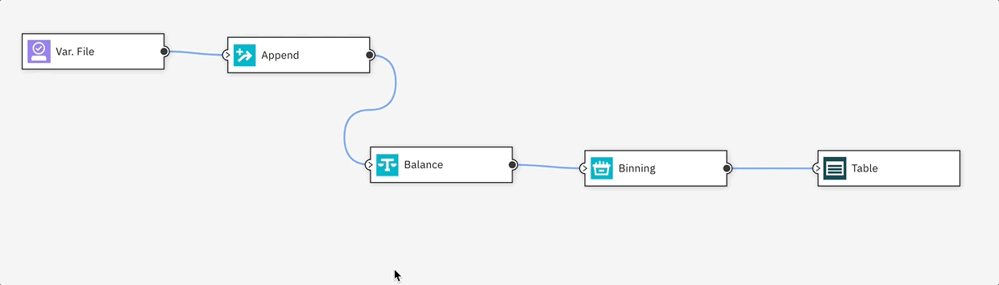
And then to view it as expanded ‘in-place:
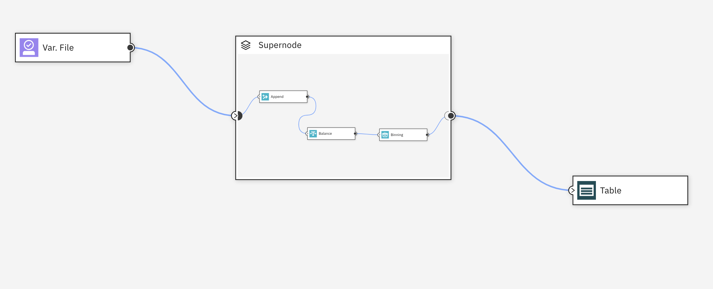
The user can also navigate to a ‘full-page’ view (well, really it is a full-viewport view):
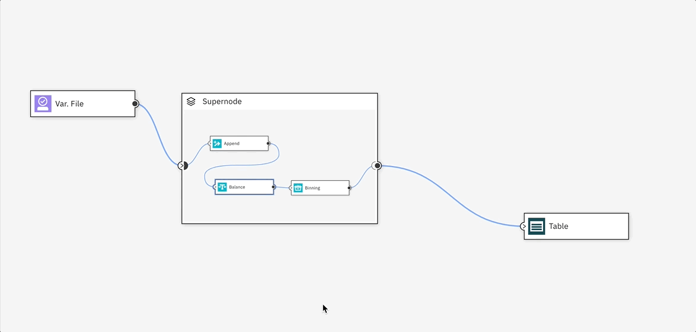
The sub-flow can be edited by the user, after it has been created, by adding, removing or editing its nodes, comments and links.
Supernodes can also be:
- Deconstructed – that is, the supernode is remove from the flow and the nodes from the sub-flow are inserted back into the parent flow.
- Converted from internal to external - this means the sub-flow is removed from its current pipeline flow and placed in a separate pipeline flow object that can be saved by the application.
- Converted from an external to internal - this means the sub-flow is copied from the external pipeline flow and placed into the pipeline flow of the supernode.
See the External Pipeline Flows page for more details.